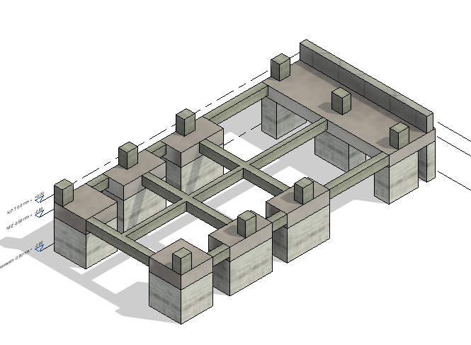

Proyecto residencial planificado
Edificio Rueda López | Multifamiliar de 4 niveles
Resumen ejecutivo
El Edificio Rueda López es un proyecto multifamiliar planificado para 2027, concebido como una solución residencial de alta eficiencia espacial y adecuada respuesta estructural en un contexto de amenaza sísmica elevada. La propuesta contempla una edificación de 4 niveles con 4 apartamentos por piso, lo que exige una organización estructural clara, repetitiva y compatible con una alta densidad de ocupación. Desde la fase de planificación, el enfoque ha estado orientado a definir un esquema estructural técnicamente sólido, capaz de responder de forma segura a las exigencias de la normativa colombiana y, al mismo tiempo, optimizar la distribución arquitectónica y la viabilidad constructiva del proyecto.
Contexto y restricciones
- Uso: Edificación residencial multifamiliar.
- Configuración: 4 niveles con 4 apartamentos por piso.
- Horizonte del proyecto: Desarrollo planificado para 2027.
- Restricción clave: Compatibilizar alta eficiencia espacial con seguridad estructural.
- Condición de diseño: Proyecto concebido para zona de alta amenaza sísmica.
- Criterios: Regularidad estructural, control de derivas, funcionalidad arquitectónica y constructibilidad.
Solución estructural
La planificación estructural del proyecto se ha orientado hacia una solución en concreto reforzado, con una configuración racional que permita una adecuada transmisión de cargas verticales y una respuesta lateral eficiente ante solicitaciones sísmicas. Dada la densidad del programa arquitectónico, se prioriza una modulación estructural ordenada, con elementos resistentes estratégicamente ubicados para no comprometer la funcionalidad interior de los apartamentos. El planteamiento busca consolidar una estructura segura, repetitiva y técnicamente eficiente, con potencial para optimizar recursos en etapas futuras de diseño detallado y construcción.
Datos técnicos del proyecto
- Nombre del proyecto: Edificio Rueda López
- Tipo: Vivienda multifamiliar
- Número de niveles: 4
- Programa arquitectónico: 4 apartamentos por piso
- Material estructural principal: Concreto reforzado
- Sistema estructural: Sistema aporticado y/o combinado según desarrollo definitivo del diseño
- Enfoque principal: Eficiencia espacial y desempeño sísmico
- Estado: Proyecto en fase de planificación estructural
- Normativa de referencia: NSR-10
Desempeño estructural esperado
Desde su etapa conceptual, el proyecto se plantea bajo criterios de desempeño estructural orientados al control de desplazamientos, estabilidad global y adecuada distribución de rigidez y masa. La configuración prevista busca minimizar irregularidades que afecten el comportamiento sísmico del edificio y asegurar una respuesta coherente con su uso residencial. Este enfoque permite que el desarrollo futuro del análisis y diseño detallado parta de una base estructural ordenada, segura y alineada con las exigencias de edificaciones multifamiliares en zonas de amenaza sísmica alta.
Entregables previstos
- Planteamiento estructural preliminar del edificio
- Modelo analítico base para desarrollo del proyecto
- Criterios de diseño estructural y modulación inicial
- Documentación técnica para avance a fase de diseño detallado
- Coordinación inicial con arquitectura y lineamientos de constructibilidad